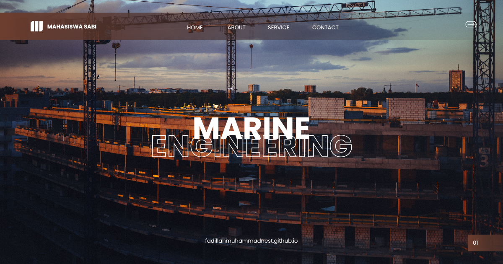

Kalkulus
Kalkulus: Landasan Matematika untuk Analisis, Pemodelan, dan Rekayasa dalam Teknik Kelautan
Dalam dunia Teknik Kelautan, berbagai fenomena alam seperti gelombang laut, arus, pasang surut, distribusi tekanan fluida, hingga respons struktur terhadap beban dinamis dianalisis menggunakan model matematika. Untuk memahami dan menyelesaikan berbagai persoalan tersebut, mahasiswa memerlukan dasar matematika yang kuat, terutama dalam konsep perubahan, laju, luas, volume, dan optimasi. Oleh karena itu, mata kuliah Kalkulus menjadi salah satu mata kuliah dasar yang sangat penting karena menjadi fondasi bagi hampir seluruh analisis rekayasa kelautan.
Mata kuliah ini mengajarkan mahasiswa cara berpikir secara logis, sistematis, dan kuantitatif melalui konsep limit, turunan, integral, fungsi multivariabel, hingga persamaan diferensial sederhana. Penguasaan kalkulus akan mempermudah mahasiswa dalam mempelajari mata kuliah lanjutan seperti Mekanika Fluida, Hidrodinamika, Analisis Struktur, Metode Numerik, Dinamika Gelombang Laut, Struktur Lepas Pantai, maupun Computational Fluid Dynamics (CFD).
Apa Itu Kalkulus?
Kalkulus merupakan cabang matematika yang mempelajari perubahan suatu besaran secara kontinu. Fokus utama kalkulus meliputi konsep limit, diferensiasi (turunan), integrasi (integral), serta aplikasinya dalam menyelesaikan berbagai persoalan ilmiah dan teknik. Melalui kalkulus, berbagai fenomena fisik yang berubah terhadap waktu maupun ruang dapat dimodelkan secara matematis sehingga menghasilkan solusi yang lebih akurat.
Dalam Teknik Kelautan, kalkulus digunakan untuk menghitung distribusi tekanan air, kecepatan aliran fluida, perpindahan panas, gaya hidrodinamika, deformasi struktur, hingga analisis dinamika sistem kelautan. Hampir seluruh perangkat lunak simulasi teknik modern juga dibangun berdasarkan konsep-konsep kalkulus.
Fokus yang Dipelajari dalam Kalkulus
Materi yang dipelajari mencakup berbagai konsep dasar hingga penerapan matematika dalam bidang rekayasa, antara lain:
- Fungsi dan grafik untuk memahami hubungan antarvariabel dalam sistem teknik.
- Limit fungsi sebagai dasar memahami kontinuitas dan perubahan suatu besaran.
- Diferensiasi (turunan) untuk menghitung laju perubahan, gradien, dan optimasi.
- Aplikasi turunan seperti optimasi desain, analisis maksimum-minimum, dan perubahan kecepatan.
- Integrasi (integral tentu dan tak tentu) untuk menghitung luas, volume, massa, serta energi.
- Aplikasi integral dalam menghitung distribusi beban, tekanan, dan pusat massa.
- Fungsi multivariabel yang melibatkan lebih dari satu variabel bebas.
- Turunan parsial sebagai dasar analisis fenomena multidimensi.
- Integral lipat untuk menghitung volume dan besaran pada ruang tiga dimensi.
- Persamaan diferensial sederhana sebagai model berbagai fenomena dinamis.
- Deret dan aproksimasi fungsi untuk penyelesaian numerik berbagai persoalan teknik.
- Penerapan kalkulus dalam rekayasa kelautan melalui berbagai studi kasus teknik dan simulasi.
Peran Kalkulus dalam Teknik Kelautan
Kalkulus merupakan bahasa matematika utama dalam dunia rekayasa. Hampir seluruh model analisis di bidang Teknik Kelautan disusun menggunakan konsep turunan dan integral sehingga penguasaan mata kuliah ini menjadi syarat penting sebelum mempelajari berbagai mata kuliah teknik tingkat lanjut.
- Menjadi fondasi analisis teknik: digunakan untuk membangun model matematika berbagai fenomena kelautan.
- Mendukung analisis hidrodinamika: membantu memahami perubahan kecepatan, tekanan, dan aliran fluida.
- Mendukung perancangan struktur: digunakan dalam analisis tegangan, deformasi, dan distribusi beban.
- Menjadi dasar simulasi numerik: digunakan dalam berbagai metode komputasi dan perangkat lunak teknik.
- Mengembangkan kemampuan analitis: melatih mahasiswa menyelesaikan persoalan kompleks secara sistematis dan kuantitatif.
Kegunaan dalam Masyarakat, Riset, dan Dunia Kerja
Konsep kalkulus memiliki penerapan yang sangat luas karena hampir seluruh bidang rekayasa dan sains menggunakan model matematika dalam proses analisis dan pengambilan keputusan.
- Masyarakat: mendukung pembangunan pelabuhan, jembatan laut, tanggul pantai, sistem drainase, dan infrastruktur pesisir yang aman dan efisien.
- Riset: digunakan dalam pemodelan gelombang laut, perubahan iklim, dinamika fluida, struktur lepas pantai, energi laut, dan robotika bawah air.
- Industri: menjadi dasar analisis pada industri maritim, konstruksi kelautan, minyak dan gas lepas pantai, energi terbarukan, serta manufaktur.
- Lingkungan: membantu memodelkan sedimentasi, erosi pantai, penyebaran polutan, dan dinamika ekosistem laut.
- Dunia kerja: kompetensi kalkulus dibutuhkan oleh Marine Engineer, Offshore Engineer, Coastal Engineer, Naval Architect, Ocean Engineer, CFD Engineer, Data Analyst, maupun peneliti di bidang rekayasa kelautan.
Penerapan Kalkulus dalam Rekayasa Kelautan
Dalam praktiknya, kalkulus digunakan untuk membangun model matematika berbagai fenomena laut, mulai dari menghitung perubahan tinggi gelombang terhadap waktu, distribusi tekanan hidrostatik pada struktur, gaya angkat dan hambat pada kapal, hingga analisis deformasi struktur akibat beban lingkungan. Seluruh analisis tersebut membutuhkan konsep diferensiasi dan integrasi sebagai dasar perhitungan.
Kalkulus juga menjadi fondasi berbagai perangkat lunak teknik yang digunakan dalam dunia industri seperti simulasi Computational Fluid Dynamics (CFD), Finite Element Analysis (FEA), simulasi dinamika kapal, hingga optimasi desain struktur kelautan. Dengan demikian, kemampuan kalkulus tidak hanya penting secara teoritis tetapi juga sangat dibutuhkan dalam praktik rekayasa modern.
Tren Terkini Kalkulus dalam Teknik Kelautan
Seiring berkembangnya teknologi komputasi, penerapan kalkulus kini semakin terintegrasi dengan simulasi numerik, kecerdasan buatan, dan analisis data. Berbagai pendekatan modern memungkinkan penyelesaian persoalan teknik yang semakin kompleks dengan tingkat akurasi yang tinggi.
- Computational Fluid Dynamics (CFD): memanfaatkan kalkulus diferensial dan integral dalam simulasi aliran fluida.
- Finite Element Analysis (FEA): menggunakan konsep integral dan diferensial untuk analisis struktur.
- Artificial Intelligence dan Machine Learning: mengintegrasikan metode optimasi berbasis kalkulus dalam proses pembelajaran model.
- Digital Twin: memanfaatkan model matematika berbasis kalkulus untuk memprediksi kondisi struktur secara real-time.
- High Performance Computing (HPC): memungkinkan penyelesaian model matematika kompleks dalam waktu yang jauh lebih singkat.
- Ocean Digital Simulation: pengembangan simulasi digital laut berbasis persamaan diferensial untuk memodelkan fenomena kelautan.
- Renewable Ocean Energy: analisis matematis pada sistem pembangkit energi gelombang, arus, dan pasang surut.
- Scientific Computing: penggunaan algoritma numerik berbasis kalkulus dalam penelitian dan pengembangan teknologi kelautan.
Perkembangan tersebut menunjukkan bahwa kalkulus tidak lagi hanya dipelajari sebagai teori matematika, tetapi telah menjadi fondasi utama bagi berbagai teknologi rekayasa modern melalui integrasi komputasi, simulasi numerik, analisis data, dan kecerdasan buatan untuk menghasilkan solusi teknik yang lebih efisien, akurat, dan berkelanjutan.
Penutup: Dasar Matematika bagi Rekayasa Kelautan Modern
Kalkulus merupakan mata kuliah fundamental yang membekali mahasiswa Teknik Kelautan dengan kemampuan menganalisis perubahan, membangun model matematika, serta menyelesaikan berbagai persoalan rekayasa secara ilmiah dan kuantitatif. Hampir seluruh analisis teknik modern, mulai dari mekanika fluida hingga desain struktur laut, dibangun di atas konsep-konsep kalkulus.
Dengan menguasai prinsip-prinsip kalkulus serta mengikuti perkembangan Computational Fluid Dynamics (CFD), Finite Element Analysis (FEA), Artificial Intelligence, Digital Twin, High Performance Computing, Scientific Computing, dan Ocean Digital Simulation, lulusan Teknik Kelautan akan memiliki fondasi matematika yang kuat untuk merancang, menganalisis, dan mengembangkan berbagai teknologi maritim yang inovatif, aman, dan berkelanjutan.
Mahasiswa Sabi
©Repository Muhammad Surya Putra Fadillah